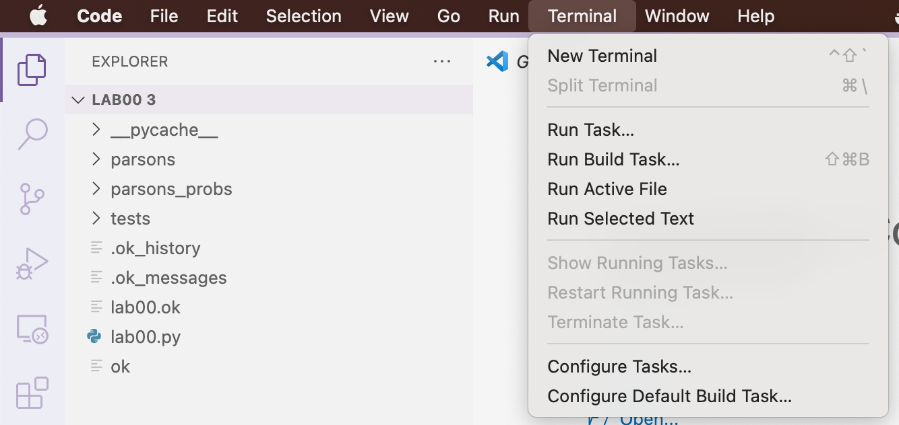
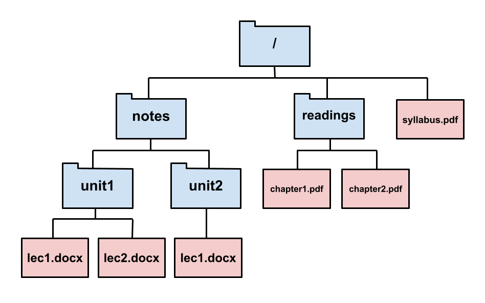
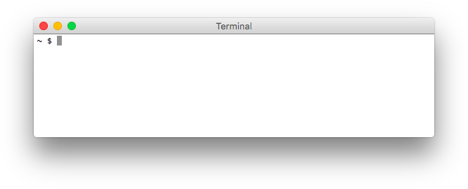
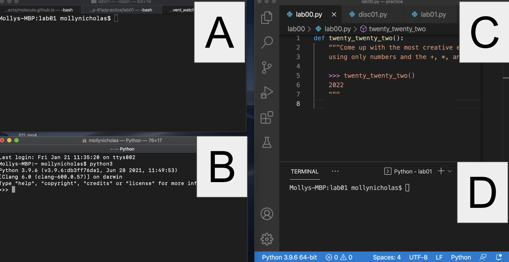
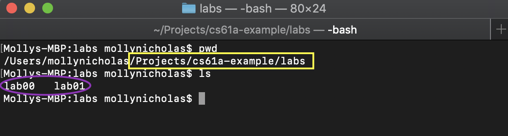

Lab 0: Getting Started (Mac/Linux Setup)
Setup
Terminal
The terminal is a program that allows you to interact with your computer by entering commands.
You already have a program called Terminal on your computer. Open
that up and you should be good to go.
Python
Python 3 is the primary programming language used in this course. This course requires
Python 3.8+ (we recommend Python 3.11). If you have an older version of Python installed,
please make sure to download and install Python 3.11. You can check your Python
version with the command python3 ––version.
Download and install Python 3.11 (64-bit). You may need to right-click the download icon and select "Open." After installing, please close and reopen your terminal.
Verify: We can use the terminal to check if your Python interpreter was installed correctly. Try the following command:
python3 --versionIf the installation worked, you should see some text that says "Python 3.XX.XX." Be sure that the version is listed as Python 3.8 or later.
Text Editor
The Python interpreter that you just installed allows you to run Python code. You will also need a text editor, where you will write Python code.
Visual Studio Code (VS Code) is the most popular choice among the staff for this course for writing Python.
We highly recommend using VS Code for this class. This will help us support you best since most of staff uses VS Code. Please do not use word processors such as Microsoft Word to edit programs. Word processors can add extra content to documents that will confuse the interpreter.
Important: Do not use the "Github Copilot" extension in VS Code in this course. It will prevent you from learning what you need to learn by filling in answers for you. If you have that installed for some reason, please disable it.
- Open the Extensions panel (Ctrl+Shift+X or ⌘+Shift+X) in VSCode.
- Search for GitHub Copilot
- Click the ⚙️ (gear) icon next to it.
- Choose Disable (keeps it installed but inactive) or Uninstall (removes it completely).
Tip: You can open a terminal directly on VS Code. Thus, when running terminal commands, you can manage everything in VS Code rather than navigating back and forth between VS Code and a separate
terminal application. You can open an embedded terminal by going to
Terminal > New Terminal in VS Code's navigation bar.

Other Text Editors
For your reference, once upon a time the staff wrote some guides on other popular text editors (but don't use these ... just use VS Code):
Some students also use:
- PyCharm: A desktop editor designed for Python.
Pair Programming
Throughout this course, you'll have many chances to collaboratively code in labs and projects. We recommend you download these pair programming extensions now to use in the future.
For sharing code in VS Code, you can follow the instructions here:
Walkthroughs & Reviews
Review: Your Computer's File System
Your computer stores files. Each file is contained in a directory (also called a folder). Directories may also be contained in other directories. All the files and directories on your computer form a hierarchical, tree-like structure. Here's an example of what that could look like.

On this computer, for example, we can see that the / directory contains another directory called
readings, which contains two files: chapter1.pdf and chapter2.pdf.
Just like how in real life we have addresses so that we can locate buildings, computers use paths
to locate files. For example, /readings/chapter1.pdf is a path that references a particular file
on your computer: the file chapter1.pdf, which is contained in the folder readings, which is
contained in the folder /.
/readings/chapter1.pdf is an example of what we call an absolute path because it uniquely
identifies a specific file or folder within the computer. The other kind of path is a
relative path, which identifies a location on the computer relative to some working directory.
For example, if the working directory is /notes/, then the relative path unit1/lec1.docx refers to
the lec1.docx file contained in the folder unit1 contained in the folder notes contained in /.
You can think of a relative path as a series of steps you take starting at the working directory to
get to some other location in the computer.
On Mac/Linux, a path starting with a slash is an absolute path (/syllabus.pdf),
while a relative path never starts with a /.
The meaning of a relative path changes depending on what the working directory is.
For example, the path lec1.docx references a different file if the working directory is
/notes/unit1/ than if the working directory is /notes/unit2/. If the working directory
is /readings/, on the other hand, the path lec1.docx is meaningless, because there is no file
named lec1.docx contained in the /readings/ folder.
Walkthrough: Using the Terminal
The terminal is a program that allows you to interact with your computer by entering commands.
Open up your terminal. You will see terminal prompt, a character
that tells you that the terminal is ready to accept inputs. The prompt is usually
% or $ if you are on a Mac/Unix system.

Don't worry if your terminal window doesn't look exactly the same. The important part is that the prompt shows
$(indicating Bash) or%(indicating zsh).
Working Directory and Home Directory
Your terminal is always open in some folder, also known as the terminal's working directory. The name of the working directory is visible before the terminal prompt.
When you first open your terminal, you will start in the "home directory".
This is the default working directory for your terminal.
The home directory is represented by the ~ symbol, which you might see
at the prompt.
~can be used in paths. For example,~/cs61a/labs/lab00/lab00.pyis an absolute path referring to a particular Python file.
You can see the absolute path to your working directory by running the following command:
pwdIf you're in your home directory, it should look something like this:
/Users/OskiBear
where OskiBear would be replaced by your username.
Commands
There are many different commands that you can use.
The command you will use most in this class is python3, which tells the computer
to run the Python interpreter. Try it out:
python3You should see some text printed out about the
interpreter followed by >>> on its own line. This is where you can type in Python
code. Try typing some expressions you saw in lecture, or just play around to see
what happens! You can type exit() or Control-D to return to the command line.
Terminal vs Python Interpreter
Let's pause and think about the difference between the terminal and the Python interpreter.

- Which is the terminal?
- Which one is the Python interpreter?
- Which one is my code editor?
- And how can you tell?
Both A and D are my terminal. This is where you can run commands like pwd and python3. D is the terminal that is built-in to VS Code.
B is the Python interpreter. You can tell because of the >>> prompt that means you've started a Python interpreter. You can also tell because the command that started it is visible: python3. The python3 command launches a Python interpreter. If you type an ordinary command into the Python interpreter, you'll probably get a syntax error! Here's an example:

C is my code editor. This is where I can write Python code to be executed via my terminal.
Walkthrough: Organizing Your Files
In this section, you will learn how to manage files using terminal commands. Start by opening your terminal.
Make sure your prompt contains a
$or%somewhere in it and does not begin with>>>. If it begins with>>>you are still in a Python interpreter, and you need to exit. See above for how.
Directories
The first command you'll use is ls. Try typing it in your terminal:
lsThe ls command (which stands for list) lists all the files and folders in the current
working directory. Recall that "directory" is another name for a folder (such as the
Documents folder).
Since your working directory is the home directory right now, after you type ls you should
see the contents of your home directory.
CLI vs GUI
Remember that you can access the files and directories (folders) on your computer in two different ways. You can either use the terminal (which is a command line interface or CLI) or you can use Finder. Finder is an example of a graphical user interface (GUI). The techniques for navigating are different, but the files are the same. For example, here's how my lab folder looks in my GUI:

And here's how the exact same folder looks in terminal:

Notice the yellow box shows you the path in both cases, and the purple ellipse shows you the contents of the "labs" folder.
Changing Directories
To move into another directory, use the cd command (which stands for change directory).
cd takes in a path as input and changes the working directory
of your terminal to be directory identified by that path.
Let's try moving into your Desktop directory. First, make sure you're in your
home directory (check for the ~ on your command line) and use ls to see if
the Desktop directory is present.
Try typing the following command into your terminal, which should move you into that directory:
cd DesktopIf you're not already in your home directory, try cd ~/Desktop. This is telling
the terminal the path where you want to go.
Making New Directories
Once you're in the Desktop directory, the next command is called mkdir,
which stands for make a new directory. mkdir takes in a name as input and creates
a new directory with that name. The new directory is stored in the current working directory.
Let's make a directory called cs61a in your Desktop directory to
store all of the assignments for this class:
mkdir cs61aA folder named cs61a will appear on your Desktop. You can verify this by
using the ls command again or by checking your Desktop using Finder.
At this point, let's create some more directories. First, make sure you are in
the cs61a directory (~/Desktop/cs61a).
Then, create three new folders called projects, lab, and hw. All of them
should be inside of your cs61a folder:
cd ~/Desktop/cs61a
mkdir projects
mkdir lab
mkdir hwNow if you list the contents of the directory (using ls), you'll see three
folders, projects, lab, and hw.
More Directory Changing
There are a few ways to return to the home directory:
cd ..(two dots). The..means "the parent directory", or one directory above your current directory.cd ~(the tilde). Remember that~means home directory, so this command will always change to your home directory.cd(cdon its own). Typing justcdis a shortcut for typingcd ~.
You do not have to keep your files on your Desktop if you prefer otherwise. Where you keep your files locally will not affect your grade. Do whatever is easiest and most convenient for you!
Downloading the Assignment
If you haven't already, download the zip archive, lab00.zip, which
contains all the files that you'll need for this lab. Once you've done that, let's
find the downloaded file. On most computers, lab00.zip will probably be located in a
directory called Downloads in your home directory. Use the ls command to
check:
ls ~/DownloadsIf you don't see lab00.zip, ask for help on EdStem or in office hours. On some versions of Safari the file may get unzipped for you, in which case you would just see a new directory named lab00.
Extracting Starter Files
You must expand the zip archive before you can work on the lab files. Different operating systems and different browsers have different ways of unzipping. Clicking on a .zip file in Mac will automatically unzip. If you run into trouble, you can search online for how to unzip a file.
Here's a way to unzip using the terminal:
Using a terminal, you can unzip the zip file from the command line. First,
cdinto the directory that contains the zip file:cd ~/DownloadsNow, run the
unzipcommand with the name of the zip file:unzip lab00.zip
You only need to unzip the files once.
Once you unzip lab00.zip, you'll have a new folder called lab00 which
contains the following files (check it out with cd lab00 and ls):
lab00.py: The template file you'll be adding your code took: A program used to test and submit assignmentslab00.ok: A configuration file forok
Moving Files
Move the unzipped lab00 directory into the lab folder you created earlier
by dragging and dropping it into the correct folder using the Finder app (which is a file explorer GUI for Mac).
Alternatively, you can also move files using the mv terminal command:
mv ~/Downloads/lab00 ~/Desktop/cs61a/labThe above command will move the ~/Downloads/lab00 folder
into the ~/Desktop/cs61a/lab folder.
Now, go to the lab00 folder that you just moved. Try using cd to navigate
your own way! If you get stuck, you can use the following command:
cd ~/Desktop/cs61a/lab/lab00Summary
Here is a summary of the commands we just went over for your reference:
ls: lists all files in the current directorycd <path to directory>: change into the specified directorymkdir <directory name>: makes a new directory with the given namemv <path to source> <path to destination>: moves the source file/directory into the destination directory
The exams for this course will not test you on how the file system works, what the definition of an absolute path is, or what commands you use in the terminal. However, these skills are essential for completing all of the assignments in this course. You can reference this page in the future.
Finally, you're ready to start editing the lab files! Don't worry if this seems complicated—it will get much easier over time. Just keep practicing! You can also take a look at our UNIX tutorial for a more detailed explanation of terminal commands.